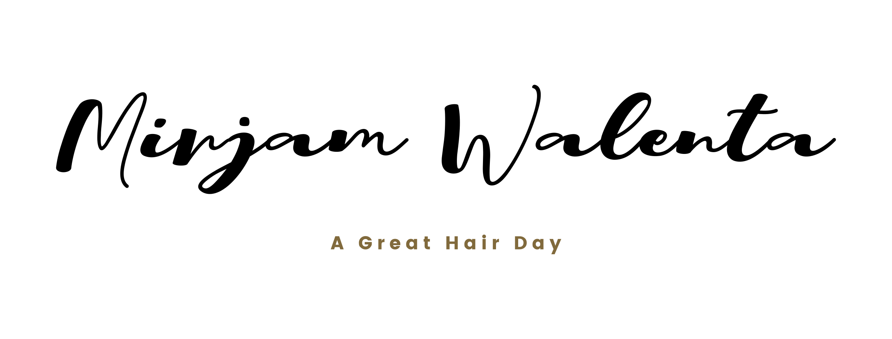

Alpha Cooling
2 Minuten Kälte, ohne dass du frierst
So läuft Alpha Cooling ab.

A Great Hair Day · Wien1/8
Die Idee
Man kennt sie vom Eisbad oder der Kältekammer.
Alpha Cooling ist die angenehme, unkomplizierte Variante.
A Great Hair Day · Wien2/8
1
So geht’s
Hände auflegen
Du legst deine Handflächen auf gekühlte Flächen. Dazu kommt ein sanfter Unterdruck.
A Great Hair Day · Wien3/8
2
Das Gefühl
Kühl, nicht eisig
Die Flächen haben etwa 4 bis 5 °C. Kein Brennen und kein Pochen wie nach einem Schneeball in der Hand.
A Great Hair Day · Wien4/8
3
Im Körper
Die Kühle verteilt sich
Gekühlt werden nur die Handflächen. Über das Blut verteilt sich die Kühle im Körper.
A Great Hair Day · Wien5/8
4
Die Dauer
Etwa 2 Minuten
Ohne Ausziehen, ohne Frieren, ohne Nässe.
A Great Hair Day · Wien6/8
5
Wann
Wann es gut passt
Viele empfinden es als erfrischend, zum Beispiel im Mittagstief oder nach dem Sport. Einzeln buchbar oder nach deinem Friseurtermin.
A Great Hair Day · Wien7/8
Zum Speichern
Alpha Cooling auf einen Blick
- Handflächen auf gekühlte Flächen
- Etwa 4 bis 5 °C, angenehm kühl
- Die Kühle verteilt sich im Körper
- Etwa 2 Minuten
- Ohne Ausziehen, Frieren oder Nässe
A Great Hair Day · Wien8/8